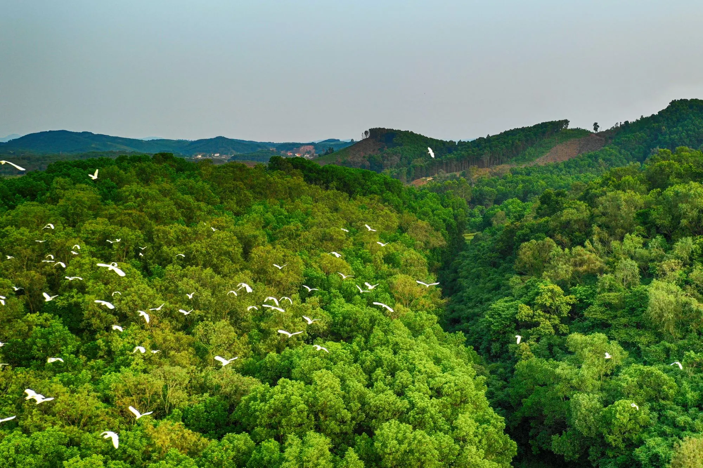

Địa danh nổi bật tại Đầm Hà
Khám phá những điểm đến hoang sơ và đậm đà bản sắc văn hóa.

Thác Bạch Vân
Ngọn thác tuyệt đẹp với 5 tầng nước tung bọt trắng xóa, nằm ẩn mình giữa cánh rừng nguyên sinh hoang sơ. Thích hợp cho những chuyến dã ngoại cuối tuần.

Đình Đầm Hà
Ngôi đình cổ kính mang đậm dấu ấn kiến trúc truyền thống, là trung tâm sinh hoạt văn hóa tín ngưỡng và nơi diễn ra lễ hội đình Đầm Hà đặc sắc.

Rừng cò núi Cái
Khu bảo tồn sinh thái yên bình, nơi hàng ngàn cánh cò trắng bay về mỗi buổi hoàng hôn, tạo nên bức tranh thiên nhiên tuyệt đẹp.